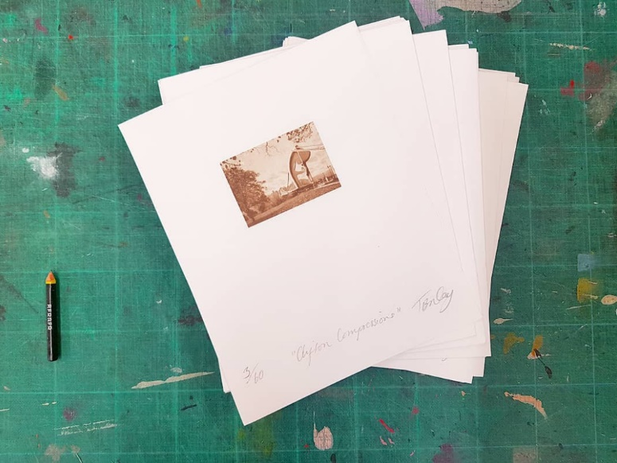
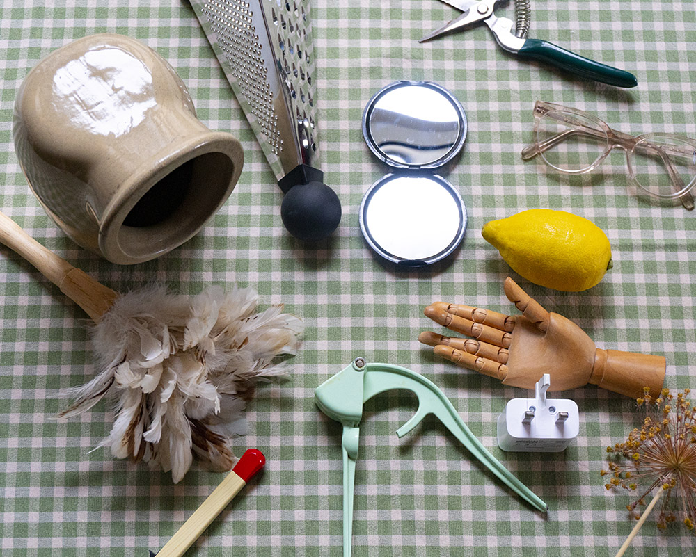

Surreal Photomontage with Everyday Objects Workshop
by artist Theadora Ballantyne-Way
by artist Theadora Ballantyne-Way
|
Lockdown has prevented us from leaving our homes, a chance to become better acquainted with our everyday objects! This online workshop will teach you how to make your own original photomontages featuring own photos, found imagery and the everyday objects in your home. Send all workshop entries in and a selected winner will have their photomontage editioned into print!
Theadora is an artist and tutor specialising in photomontage and video. She transforms hand tools and objects with archival material and photographs from her travels into surreal artworks, this workshop will encourage you to scroll through your smartphone gallery with intent, selecting own photos as backdrops and foregrounds and throwing your objects into the bizarre of the surreal sphere.
This is a free open submission process welcoming photomontages both internationally and nationally. The prize is your photomontage translated onto a A5 photoetching plate and a monochrome edition of 5x prints sent to the artist on Somerset paper to sign, title and keep.
Entries to be sent via email: theobway@gmail.com by the 20th July to be in with a chance of winning.

Materials:
Begin by collecting photographical imagery from newspaper clippings, books, magazines or your own photographs. I love to look through my own photo gallery on my phone and discover old places and incidences that I chose to record and may not have used yet. It’s helpful to seek interesting backgrounds or situations that could heighten your object’s appeal. You will need some images of your objects or Google is a great tool to look for images or royalty free websites like PxHere, if collecting images from the internet ensure you go to: ‘tools’ then ‘size’ and select ‘large’ to secure good printable quality. Digital programmes are a great way to photomontage, I use Adobe Photoshop but Gimp, Photoshop Essentials and ‘paint.net’ is a free app and are also very strong montaging tools. Thick paper or card is useful to stick your subjects down if not using a digital app. Sewing/nail scissors are a great way to cut out fine details and a little masking tape to hold your cuttings into place. 
Step 1 - Collect your Photomontage Material
Start by selecting your object, which could be anything overlooked or perhaps significant of your lockdown experience or maybe it is just a great object. Think about the setting and how the object could fit within its new environment. What possibilities could occur? Choose a range of different background options and see where your object makes the best fit, remember you could always photograph images and re-print/size them to get the correct scale. They could end up at the park, your living room, the jungle, in space or in a historical photograph. Scrolling through your smartphone gallery will help you to get personal, contemporary set of images of the here and now to work with or visit a favourite lockdown exercise spot and photograph it. Be sure to collect and shoot a range of different possibilities so you have lots of options for your object. |

|

|
|
Step 2 - Shoot your object
To photograph my object I usually take many photos, often the objects I use are stainless steel and reflective. To avoid reflections take them outside and stand on highground to create a seamless photograph. To shoot at home, I often set up a photography studio out of white foamboard and paper. Using a tripod or a stool will enable you to get a steady hand with your camera and avoid unfocused imagery. Take lots of photographs of the object in different positions and angles to gain multiple perspectives. The more images, the more to choose from. Think about what viewpoint you would like to achieve, worms eye view can make your object look super human and larger than it is, and birds eye gives an aerial perspective for example. |
|

|

|
|
Step 3 - Cut and Stick
Next, remove the background of your object. I usually use Photoshop and the quick selection tool or zoom in and erase for precision, nail scissors if you aren’t using software. With the object by itself you are free to place it in any background and include foreground features or layers. You could keep adding extra detail like extra objects or features to build your setting. Use a little masking tape or blu tack to hold them in place. I often take photographs of my new compositions to try out several montage options or if digital, screenshots, so I have several photo-sketches and I can select my preferred final outcome to stick and paste. |

|

|
|
I’m looking forward to seeing your photomontages and I really hope you enjoyed making them! Please upload a photograph of it and any workings out on your social media and tag me on either channel:
Instagram: @theadora_ballantyne_way
Twitter: @TheadoraBWay Facebook: @TheadoraBWay All entries must be emailed to: theobway@gmail.com Larger files please send on ‘WeTransfer’. Happy montaging! 😊 |